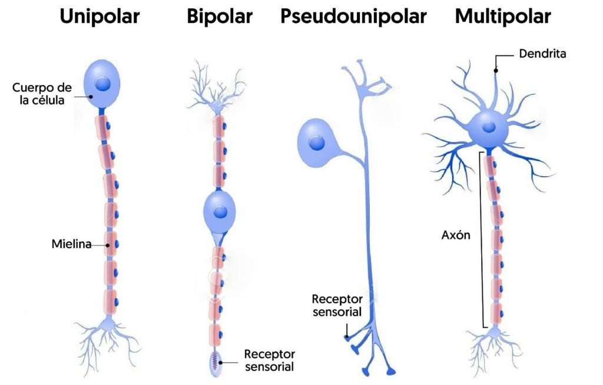
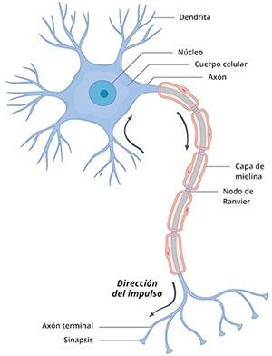
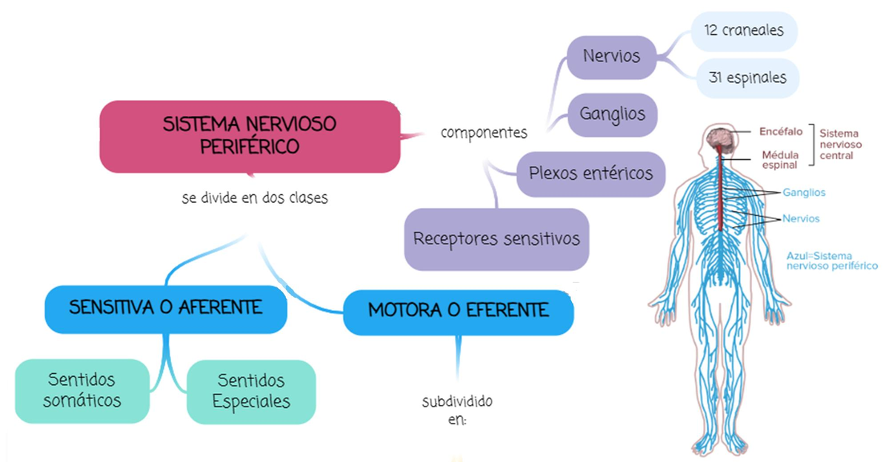
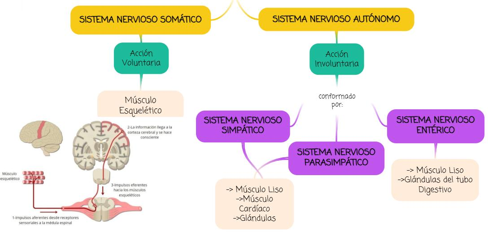
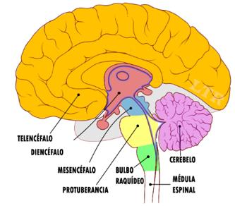
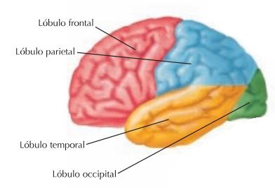
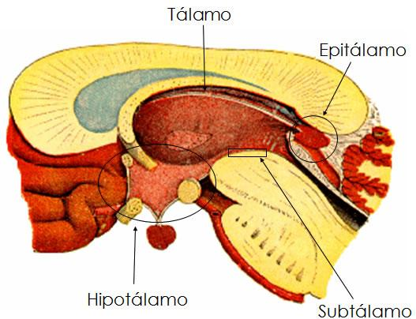
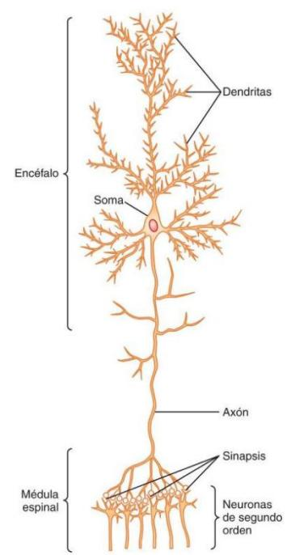
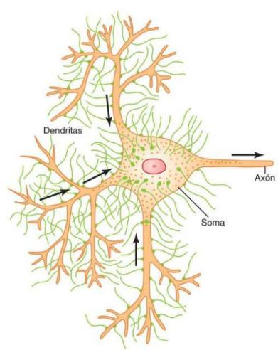

ClinicusMed · Guyton & Hall, Tratado de Fisiologia Médica, 14ª ed. · Dossiê Clinicus — Padrão de Excelência
O sistema nervoso é único pela enorme complexidade das ações de controle que pode desempenhar. A cada minuto, recebe milhares de informações vindas de diferentes órgãos e estruturas sensitivas, e as integra para determinar a resposta que o organismo vai dar.
| Dado | Valor |
|---|---|
| Neurônios no SNC | Mais de 100 bilhões |
| Sinapses por neurônio | De várias centenas até 200.000 |
| Tipo (por função) | Função |
|---|---|
| Sensoriais (aferentes) | Transportam estímulos dos receptores ao SNC |
| Motoras (eferentes) | Conduzem respostas do SNC aos órgãos efetores |
| Interneurônios (associativas) | Conectam neurônios sensoriais com motoras, dentro do SNC |


| Divisão | Componentes |
|---|---|
| SNC (Sistema Nervoso Central) | Encéfalo + Medula Espinal |
| SNP — via Sensorial | Envia informação ao SNC por neurônios sensitivos aferentes |
| SNP — via Motora | Leva informação do SNC às células-alvo por neurônios eferentes |



| SNC | Estrutura | Subdivisões |
|---|---|---|
| Encéfalo | Cérebro | Telencéfalo (córtex, corpo caloso, fórnix) + Diencéfalo (tálamo, hipotálamo, epitálamo, subtálamo) |
| Tronco encefálico | Mesencéfalo + Protuberância + Bulbo raquídeo | |
| + Cerebelo | — | |
| Medula Espinal | ||

| Lóbulo | Funções principais |
|---|---|
| Frontal | Funções motoras (área motora primária), planejamento e tomada de decisões, personalidade e controle de impulsos, área de Broca |
| Parietal | Processamento de sensações somáticas (tato, dor, temperatura, propriocepção) na área somatossensorial primária, percepção do próprio corpo |
| Temporal | Audição (área auditiva primária), memória, compreensão de linguagem (área de Wernicke) |
| Occipital | Processamento visual (área visual primária e de associação) |
| Ínsula | Interocepção (batimentos, respiração, sensações viscerais, fome, dor visceral), gustação (área gustativa primária), emoções e consciência corporal |

A informação chega ao SNC pelos nervos periféricos e é conduzida imediatamente a múltiplas áreas sensoriais, em todos os níveis: medula espinal, formação reticular (bulbo, ponte, mesencéfalo), cerebelo, tálamo e áreas do córtex.
O papel mais importante do sistema nervoso é controlar as atividades do corpo, através de 3 vias:
Uma das funções mais importantes é processar a informação aferente pra gerar respostas mentais e motoras apropriadas — o SN classifica a informação como relevante ou irrelevante, canalizando o que é importante para as regiões integrativas e motoras corretas. Essa canalização + processamento se chama função integrativa.
| Nível | Estruturas | Funções destacadas |
|---|---|---|
| Medular | Medula espinal | Movimentos rítmicos (marcha), reflexos protetores (retirada), reflexos posturais, controle vegetativo |
| Encefálico inferior (subcortical) | Bulbo, ponte, mesencéfalo, hipotálamo, tálamo, cerebelo, gânglios da base | Controle de PA e respiração (bulbo/ponte), reflexos alimentares, equilíbrio, padrões emocionais |
| Encefálico superior (cortical) | Córtex cerebral | Armazenamento de memórias, processos mentais — mas NUNCA trabalha sozinho |

É o ponto de contato onde o impulso se transmite da neurônio pré-sináptica pra pós-sináptica. Na maioria dos casos, não é um contato elétrico direto, e sim mediado por uma substância química: o neurotransmissor.
| Tipo | Mecanismo | Frequência no SNC |
|---|---|---|
| Química | Neurotransmissor age em receptores da membrana seguinte — mais de 40 substâncias transmissoras identificadas | Praticamente TODAS as sinapses do SNC humano |
| Elétrica | Canais fluidos abertos (gap junctions) conduzem eletricidade direto de uma célula a outra | Muito menos frequentes |
| Componente | Descrição |
|---|---|
| Soma | Corpo principal da neurônio |
| Axônio (único) | Vai do soma até o nervo periférico |
| Dendritos (múltiplos) | Ramificações que podem se estender até 1 mm |
| Terminais pré-sinápticos | "Botões terminais" com vesículas de neurotransmissor |
| Fenda sináptica | 200 a 300 angstroms de largura |

Passo a passo: potencial de ação chega ao terminal pré-sináptico → despolariza a membrana → abre canais de cálcio dependentes de voltagem → Ca²⁺ entra → por atração eletrostática, as vesículas se fundem com a membrana pré-sináptica → liberação do neurotransmissor na fenda sináptica.
| Componente | Função |
|---|---|
| De ligação | Sobressai na fenda sináptica, onde o neurotransmissor se fixa |
| Ionóforo (intracelular) | Atravessa a membrana até o interior da célula |
O ionóforo tem 2 tipos possíveis:
| Tipo de ionóforo | Mecanismo | Velocidade |
|---|---|---|
| Canal iônico | Deixa passar um tipo específico de íon | Rápido |
| Ativador de segundo mensageiro | Molécula que ativa substâncias dentro da célula (geralmente via proteína G) | Mais lento, porém mais prolongado |
| Canal | Íons | Efeito típico |
|---|---|---|
| Catiônico | Principalmente Na⁺ (às vezes K⁺ ou Ca²⁺) | EXCITATÓRIO |
| Aniônico | Principalmente Cl⁻ | INIBITÓRIO |
| Receptores EXCITATÓRIOS | Receptores INIBITÓRIOS |
|---|---|
| Abertura de canais de Na⁺ → despolarização | Abertura de canais de Cl⁻ → hiperpolarização |
| ↓ Condução de Cl⁻/K⁺ → ↑ excitabilidade | ↑ Condutância de K⁺ (sai) → hiperpolarização |
| Mudanças metabólicas que excitam a neurônio | Ativação de enzimas que inibem funções metabólicas |
Mais de 50 substâncias transmissoras já foram identificadas, divididas por tamanho molecular e mecanismo de ação:
| Grupo | Características |
|---|---|
| 1. Molécula pequena, ação rápida | Respostas agudas: sinais sensitivos ao SNC, sinais motores aos músculos. Vesículas RECICLÁVEIS (contêm enzimas de síntese) |
| 2. Neuropeptídeos | Síntese diferente, ações mais LENTAS e prolongadas. Vesículas NÃO recicláveis (sofrem autólise). Mudam nº de receptores/sinapses |
| Neurotransmissor | Efeito | Localização/origem principal |
|---|---|---|
| Acetilcolina (ACh) | Geralmente excitatório (inibitório em terminações parassimpáticas periféricas, ex.: vago no coração) | Córtex motora, gânglios da base, motoneurônios, sistema autônomo |
| Noradrenalina (NE) | Excitador ou inibidor conforme o órgão; controla sono-vigília, atenção, humor | Locus ceruleus (tronco encefálico), hipotálamo, simpático pós-ganglionar |
| Dopamina | Geralmente inibidor; controle motor e circuitos de recompensa | Substância negra → gânglios da base |
| Glicina | SEMPRE inibidor | Medula espinal |
| GABA | Principal inibidor do SNC adulto (excitador em fases iniciais do desenvolvimento) | Medula, cerebelo, gânglios da base, córtex |
| Glutamato | SEMPRE excitador | Vias sensitivas aferentes e córtex cerebral |
| Serotonina | Inibidor da dor, sono-vigília, humor | Núcleos da rafe (tronco encefálico) |
| Óxido Nítrico (NO) | Gasoso, não armazenado em vesículas — efeitos prolongados | Regiões ligadas a memória e comportamento |
Categorias principais de neuropeptídeos, agrupadas por origem/função:
| Categoria | Exemplos |
|---|---|
| Hormônios liberadores hipotalâmicos | Hormônio liberador de tirotropina, hormônio liberador de LH, somatostatina |
| Peptídeos hipofisários | ACTH, β-endorfina, hormônio estimulante dos melanócitos α, prolactina, LH, TSH, GH, vasopressina, ocitocina |
| Peptídeos que agem no intestino e encéfalo | Leucina/metionina-encefalina, substância P, gastrina, colecistocinina, VIP, fator de crescimento nervoso, insulina, glucagon |
| Procedentes de outros tecidos | Angiotensina II, bradicinina, carnosina, peptídeos do sono, calcitonina |
| Termo | Definição |
|---|---|
| Coliberação | Neuropeptídeo + transmissor de molécula pequena liberados pela MESMA vesícula sináptica |
| Cotransmissão | Liberados em vesículas DIFERENTES (mesmo ou diferentes botões) |
| Evento | Valor/Descrição |
|---|---|
| Potencial de repouso do soma | ~ -65 mV |
| PEPS (Potencial Pós-Sináptico Excitatório) | Entrada de Na⁺ eleva o potencial 10-20 mV na direção positiva |
| Limiar de excitação | ~ -45 mV — gera potencial de ação no CONE AXÔNICO (mais canais de Na⁺ dependentes de voltagem ali) |
| PIPS (Potencial Pós-Sináptico Inibitório) | Abertura de canais aniônicos (Cl⁻) ou ↑ permeabilidade a K⁺ → hiperpolarização |
Ocorre nas terminações pré-sinápticas ANTES de o sinal alcançar a sinapse propriamente dita — geralmente causada pela liberação de uma substância inibitória (frequentemente GABA) sobre as fibrilas nervosas pré-sinápticas. É um mecanismo comum em muitas vias sensitivas.
Quando sinapses excitatórias são estimuladas repetidamente em alta frequência, a taxa de disparo da neurônio pós-sináptica começa muito alta mas diminui progressivamente.
| Condição | Efeito sobre excitabilidade |
|---|---|
| Alcalose | Aumenta MUITO a excitabilidade neuronal |
| Acidose | Reduz MUITO a excitabilidade (pH <7,0 → estado de coma) |
| Hipóxia | Interromper o fluxo sanguíneo cerebral por 3-7 segundos pode causar inconsciência (síncope, AVC) |
Cafeína, teofilina e teobromina (presentes no café, chá e cacau) aumentam a excitabilidade neuronal, reduzindo o limiar de excitação.
A analogia ajuda a entender que o sistema nervoso não apenas transmite sinais — ele os processa. Toda vez que um sinal sensitivo chega de um receptor periférico, ele se difunde por vários níveis do SNC, onde respostas apropriadas são geradas — de forma parecida (embora não idêntica) ao processamento de informação num circuito computacional.
A transmissão sempre vai do axônio da neurônio anterior para as dendritas da seguinte — nunca ao contrário. Essa regra, reforçada pela natureza "unidirecional" da sinapse química, é o que permite que circuitos complexos do SNC processem informação de forma organizada e previsível, sem sinais "voltando" e criando caos.
Um erro comum é pensar que o córtex "comanda tudo" — mas o texto é claro: são as estruturas SUBCORTICAIS que iniciam o estado de vigília no córtex, "abrindo" o acesso ao banco de memórias. Isso explica por que lesões subcorticais (ex.: no tronco encefálico, na formação reticular) podem causar coma mesmo com o córtex estruturalmente intacto.
Além disso, muitos padrões emocionais complexos (raiva, excitação, respostas sexuais, reações a dor e prazer) PODEM ocorrer mesmo após destruição de grande parte do córtex cerebral — evidenciando que essas funções têm base subcortical robusta.
Embora sinapses elétricas existam (via gap junctions), elas são muito raras no SNC humano. A esmagadora maioria das sinapses usa neurotransmissores químicos — o que traz uma vantagem evolutiva importante: permite MODULAÇÃO. Uma sinapse química pode ser reforçada, enfraquecida, bloqueada ou modificada por dezenas de fatores (drogas, pH, fadiga, outros neurotransmissores) — algo que uma simples conexão elétrica direta não permitiria com a mesma flexibilidade.
| Característica | Canal iônico direto | Segundo mensageiro (proteína G) |
|---|---|---|
| Velocidade | Muito rápida (milissegundos) | Mais lenta (a cascata leva tempo) |
| Duração do efeito | Breve | Prolongada (segundos a minutos, ou mais) |
| Tipo de resposta | Mudança imediata de voltagem | Mudanças metabólicas, transcrição gênica, mudanças estruturais |
A maioria dos neurotransmissores (ACh, noradrenalina, dopamina) tem efeito CONTEXTUAL — excitador ou inibidor dependendo do receptor e do órgão-alvo. Já Glicina (sempre inibidora) e Glutamato (sempre excitador) são exceções fixas — isso os torna alvos previsíveis e importantes na farmacologia (ex.: excesso de glutamato está ligado à excitotoxicidade neuronal em AVC e doenças neurodegenerativas).
Embora o PEPS (potencial pós-sináptico excitatório) se espalhe por toda a membrana do soma, é especificamente no cone axônico (segmento inicial do axônio) que o potencial de ação realmente se dispara — porque essa região tem uma concentração muito maior de canais de sódio dependentes de voltagem do que o resto do soma.
| Tipo | Onde ocorre | Mecanismo típico |
|---|---|---|
| Pré-sináptica | No terminal ANTES da sinapse (na fibrila pré-sináptica) | GABA agindo sobre a fibrila que ainda vai liberar seu próprio transmissor |
| Pós-sináptica (PIPS) | Na membrana da neurônio RECEPTORA | Abertura de canais de Cl⁻ ou ↑ condutância de K⁺, hiperpolarizando a célula |
Diante de qualquer questão sobre esse capítulo, pergunte:
O sistema guarda, no seu navegador, quais cards você já sabe bem e quais precisam voltar mais cedo.
Escolhe uma alternativa, depois clica em "Ver comentário completo".